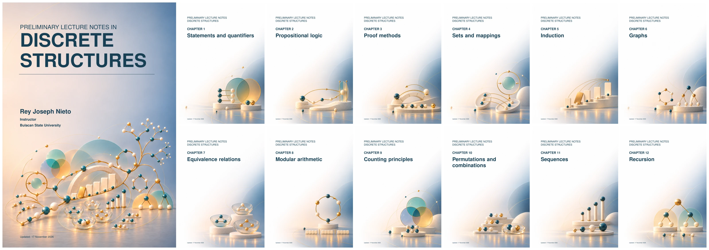

Discrete Structures for IT
Bulacan State University
Bustos Campus
Course information
IT 107 · 2nd Semester, A.Y. ’26 – ’27
- Instructor: Rey Joseph Nieto.
- Email: reyjoseph [dot] nieto [at] bulsu [dot] edu [dot] ph
- Last day to drop subjects: 22 January 2027.
- Assumed background: completion of, or familiarity with, Mathematics in the Modern World (MMW).
- We will not meet on 21 November 2026, to allow time for students registering late to complete their enrolment.
- Before our first meeting on 28 November 2026, read the Introduction, Chapter 1 and Chapter 2 carefully.
- Chapters 1 and 2 revisit mathematical language and logic from MMW and develop the ideas further.
- Bring a recent 1×1 photo to our first meeting on 28 November. I will attach it to our fixed seating plan so I can identify you, check attendance more quickly and record your recitation marks.
Course outline and printable lecture notes
- I have planned twelve self-contained chapters across thirteen teaching weeks, including the opening self-study week, to allow for class suspensions and catch-up work. Chapter numbers match the numbered teaching weeks.
- If we stay on schedule, we may also discuss introductory automata theory and mathematical ways of describing computer programs and their behaviour.
- There are no coding assignments; pseudocode may be used.

| Date | Topic | Assessment Due |
|---|---|---|
| PDF Introduction | ||
| 21 Nov 2026 | PDF 1 · Statements and quantifiers Self-study; no face-to-face class. |
— |
| 28 Nov 2026 | PDF 2 · Propositional logic | — |
| 5 Dec 2026 | PDF 3 · Proof methods | — |
| 12 Dec 2026 | PDF 4 · Sets and mappings | — |
| 19 Dec 2026 | PDF 5 · Induction | Problem Set 1 |
| 26 Dec 2026 | Christmas break | — |
| 2 Jan 2027 | Christmas break | — |
| 9 Jan 2027 | PDF 6 · Graphs | Problem Set 2 |
| 16 Jan 2027 | PDF 7 · Equivalence relations | — |
| 23 Jan 2027 | First Philippine Republic anniversary (assumed holiday) | — |
| 30 Jan 2027 | Midterm examination | — |
| 6 Feb 2027 | Chinese New Year (no classes) | — |
| 13 Feb 2027 | PDF 8 · Modular arithmetic | Problem Set 3 |
| 20 Feb 2027 | PDF 9 · Counting principles | — |
| 27 Feb 2027 | PDF 10 · Permutations and combinations | Problem Set 4 |
| 6 Mar 2027 | PDF 11 · Sequences | — |
| 13 Mar 2027 | PDF 12 · Recursion | Problem Set 5 |
| 20 Mar 2027 | Chapter 12 problem class and course revision | — |
| 27 Mar 2027 | Black Saturday (no classes) | — |
| 3 Apr 2027 | Final examination | — |
The entire book as of 17 November 2026
Class format
Saturday Meeting Timetable
- 10:30 a.m.–12 noon: lecture on the current chapter.
- 12 noon–1:00 p.m.: lunch break.
- 1:00–1:30 p.m.: recap of the previous chapter.
- 1:30–2:30 p.m.: problems on the previous chapter.
Preparation and participation
- Read the assigned chapter before class and attempt the previous chapter’s problems. You need not have mastered the material; identify where you need help. Questions will draw on the reading, with guidance as needed.
- Recitation is graded at every meeting on the quality of your reasoning, rather than how often you speak. There are no traditional quizzes.
- Consultations: I am available after class; if nobody approaches within five minutes of dismissal, I will leave. You may also email questions.
Assessment
| Component | Weight |
|---|---|
| Problem sets (best four of five) | 50% |
| Attendance | 5% |
| Recitation | 15% |
| Midterm examination | 15% |
| Final examination | 15% |
| Total | 100% |
- Problem-set scores are converted to percentages. The lowest is dropped; the remaining four are averaged, with each retained set accounting for 12.5% of the course mark.
- Term examinations use zero-based grading.
- The minimum passing percentage is 75%, equivalent to 3.00 (Student Manual, Part II, Section K).
Bonus for Mathematical Corrections
- Question my reasoning and raise suspected mistakes.
- Each confirmed significant error in the notes or lectures earns five percentage points on one examination mark (for example, 70% becomes 75%).
- A significant error affects a claim, calculation or reasoning; harmless typographical errors do not qualify.
- I will choose the examination and redirect any credit above 100% to other components in whichever way benefits you most.
- Raw marks and bonus adjustments are recorded separately.
Final examination exemption
To qualify:
- Pre-final standing: 1.50 or better.
- Coursework: all course requirements completed.
- Attendance: perfect attendance, as an additional course condition; valid excused absences do not count against this requirement.
The academic conditions follow the Student Manual, Part II, Section J.5.
Let \(P\) be your best-four problem-set average, \(A\) your attendance score, \(R\) your recitation score and \(M\) your midterm score, all percentages after any bonus credit. Your pre-final percentage is
\[ S=\frac{50P+5A+15R+15M}{85}. \]
- Convert \(S\) using the University’s grading scale to obtain your pre-final standing.
- If exempt and not taking the final: I will record the exemption and use \(S\) as the placeholder for its 15% component, preserving your pre-final percentage and grade.
- If exempt and choosing to take the final: You waive the exemption. I will record your actual examination score, including any bonus credit, and use it at the usual 15% weight to calculate your course grade, as for a student without an exemption. Your final course grade may be better or worse than your pre-final standing.
Problem sets
- All submissions must be handwritten.
- Each problem set will allow at least two weeks for completion.
- Late or missing submissions receive zero unless an accepted excuse or university-approved arrangement applies.
- An unexcused absence does not extend a deadline or entitle you to a make-up assessment.
AI and face-to-face checks
- You may use AI for revision, but not to solve assigned problem sets.
- Examinations and recitations require independent answers without AI.
- I may ask you to explain your submitted solution in person: your approach, notation and reasons for particular steps.
- These discussions will not include unrelated or trick questions, or require a different solution.
- If you cannot give even a basic account of your own reasoning, the problem set receives zero.
Problem sets will be posted here when issued.
Course policies
The approved syllabus and university rules take precedence. See the Student Manual, Part II, Sections F–G and J–L and the Student Conduct, Discipline and Grievance Guidelines (BOR Resolution No. 34, series of 2022).
Devices and notes
- Phones and other personal electronic devices must be switched off and put away, including when consulting notes.
- If you have a device out or in use, you will be marked absent for that class.
- Approved accessibility arrangements and university-required exceptions take precedence.
- Use printed notes or, preferably, your own handwritten notes; bring paper and a pen or pencil.
Participation and conduct
- Difficulty understanding is not a reason for exclusion; ask for help.
- A clear and persistent unwillingness to engage will lead to being asked to step outside and return when ready to participate.
- Disruptive behaviour will be addressed under university disciplinary procedures. Participation marks follow the approved assessment criteria.
Attendance and punctuality
- Attend regularly. Arrival 15 minutes after the start is recorded as tardy; arrival 20 minutes after the start is recorded as absent.
- Being marked absent does not prevent attendance at the lesson.
- Before midterms, unexcused absences exceeding 20% of required semester contact hours trigger automatic dropping, recorded as FDA (failure due to absences) or UD (unofficially dropped).
- The absence total does not reset after midterms. These classifications are distinct from a numerical grade of 5.0.
- If absent, read the missed notes and attempt the problems before the next class; seek help promptly if needed.
Excused absences
Recognised grounds:
- Official university representation in curricular, co-curricular or extracurricular activities.
- Illness certified by your attending doctor or the University physician.
- Force majeure: unavoidable extraordinary events beyond your control.
Other absence rules:
- Weddings, parties and similar personal commitments do not qualify.
- Notify me promptly with supporting documentation and arrange to complete missed work.
- The handbook sets a 30% limit on excused absences.
Missed examinations
- For an excused absence, contact me promptly with supporting documentation.
- Special examinations require the instructor’s recommendation and unit head’s approval under the manual’s Section J.
- The final is not automatically double-weighted.
- An unexcused missed examination receives zero, subject to university rules.
Marks and concerns
- You may request an explanation or review of your marks and use the university grievance procedure.
- I may consider perfect attendance and meaningful participation when reviewing borderline marks, within university rules. Neither guarantees a pass or replaces required coursework.
Commitment
- Speak with me early if you anticipate difficulty meeting the requirements.
- If you cannot commit to preparation, attendance, participation and coursework, I recommend official withdrawal under university procedures and deadlines.
Proofwriting and abstraction
- This is a proof-based course.
- The aim is to reason precisely about objects, assumptions and relationships, as you would with code modules, interfaces and network configurations.
- You will practise explaining why a method works, justifying a claim and finding counterexamples.
About me
- Education: first-class BSc in Mathematics, University of Bristol, England (2026).
- Teaching: previously taught Mathematics in the Modern World and Living in the IT Era at BulSU San Rafael; formerly a teaching assistant for Mathematical Programming at Bristol.
- Work: Assistant Secretary at the Office of the Cabinet Secretary, Office of the President, working on policy analytics during weekdays.
- Interests: probability, topological data analysis, AI and machine learning, network science and combinatorics, with applications in healthcare, industry and public policy.